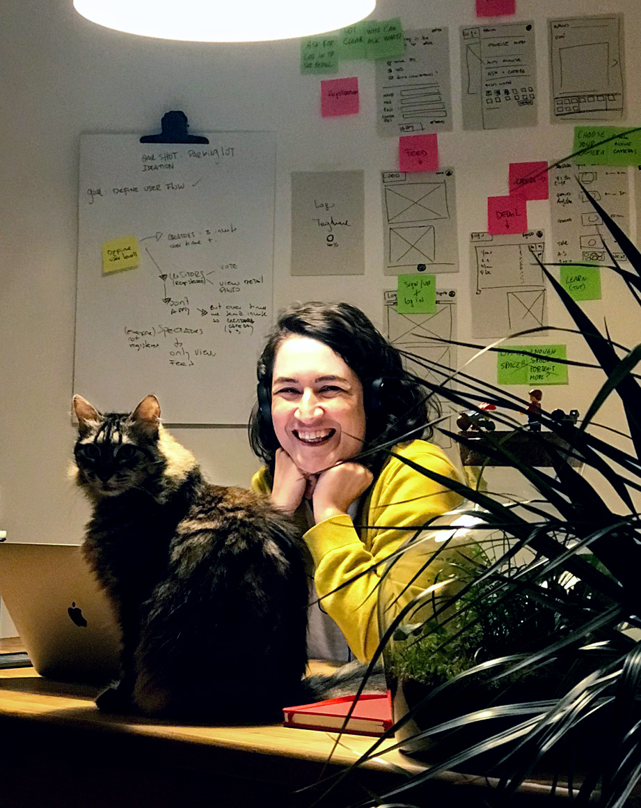
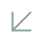
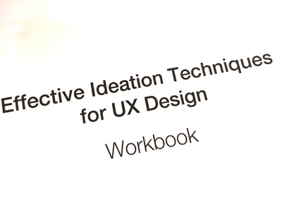

<section class="workDetail bio">
	<div class="workDetail-container">
		<div class="workDetail-main">
			<h1>Paula Guagliardi</h1>
			<p>I am a <strong>UX designer</strong> who enjoys translating insights from users into interfaces for <strong>products with a positive impact on people's lives</strong>.</p>

			<p>I see UX as a bridge, a way to <strong>broaden the view of others</strong>, understand them, and help people change their behavior by giving them the tools they need.</p>

			<p>I recently <strong>moved to Berlin</strong>, and I've been immersing myself in the <strong>UX and Startup community</strong>. My goal is to <strong>keep specializing in product design</strong>, learn new methodologies, and apply my skills to impact business growth and the user's behavior.</p>

			<p>I am looking to <strong>be part of a product that impacts people</strong> in a meaningful way. With a broad view of UX, I like to work closely with a diverse team of professionals and <strong>participate in all phases of a product</strong>, from discovery to delivery to iteration.</p>

			<p>My experience as a <strong>Web Designer gave me skills in HTML and CSS</strong> to design, prototype, and have better discussions with my teammates.</p>

			<p>The problems I am most interested in working are rooted in learning, knowledge, critical thinking, biases, privacy, and productivity workflows, diversity, accessibility, and digital transformation to translate technology to every user.</p>

			<p>I want to design solutions to empower people in these areas and think about how a person will be using something to make it more easy, integrated, and with a <strong>positive feeling attached</strong>.</p>

			<p>I am always <strong>pushing myself for improvemen</strong>t and value every opportunity to learn something new.</p>

			<div class="spaceVert"></div>

			<h2>.Background</h2>

			<p>I started my career in 2005 in Buenos Aires, after graduating as a web designer. I began working in <strong>digital advertising</strong>, where I <strong>learned about design, code, branding, and how to think and communicate creative concepts</strong>.</p>

			<p>I worked at various agencies with different structures and sizes, where I learned different things.
				<ul>
					<li>In a small digital agency, I learned to <strong>wear different hats</strong> and to code everything I designed.</li>
					<li>In the bigger digital agency, I learned to work in a <strong>cross-functional team</strong>.</li>
					<li>In the traditional multinational agency, I learned how to integrate campaigns from <strong>other mediums into digital formats</strong>.</li>
					<li>In the global media network, I learned about <strong>strategy</strong> and how to <strong>lead</strong> projects.</li>
				</ul>
			</p>

			<p>Although I enjoyed working in a creative environment, I was <strong>highly motivated when thinking about the user and their goals, content quality, and usability</strong>. Still, due to advertising nature, this was never a priority.</p>

			<p>Aiming to work with other like-minded persons, <strong>I started my design studio, Furycat</strong> 😾. <strong>We developed digital strategies, social media campaigns, design websites, and e-commerces</strong> for companies like Herbalife, Kraft Foods, and Nespresso but also with small businesses and entrepreneurs. I found it <strong>rewarding to help small businesses thrive</strong>.</p>

			<p>I was also a <strong>digital partner to graphic design studios</strong> doing front-end development, interaction design, and consulting. These were <strong>long term relationships</strong> that continued throughout the entire time I had my studio.</p>

			<p>Furycat was a time for personal growth. I developed <strong>new skills to deal with the operational side of the business</strong>, like developing processes for managing projects and clients, and putting together flexible teams.</p>

			<p><strong>During this period, I started learning about User-Centered design processes and UX methodologies, discovering a whole new world, a magical world</strong>. ✨</p>

			<p>I realised how my clients could benefit from these methodologies, so <strong>I proactively began applying them to the projects</strong> getting a better response from both users and businesses. I used the feedback from the projects to find new topics and techniques to learn.</p>

			<!-- <h3>From Independent Studio to UX Design</h3> -->

			<p>As I continued to learn UX, I became more interested in experiencing the <strong>full process of product design</strong> by being part of a product team where I could share and learn from others.</p>

			<p>I started doing this at Blockinar, a startup developing blockchain-based products. <strong>I worked in a cross-functional team using agile methodologies to reach our goals. I defined the design brief and the projects' objectives and designed the UI and UX for our apps</strong>. I also outlined the design process for the company.</p>

			<p>I enjoyed working in this environment, and I wish I had more time to explore future iterations and business growth, but after my trip, living abroad was something my husband and I were seeking. In 2019 we got an opportunity to come to Berlin, and we took it!</p>

			<p>I see this period as a great chance to challenge myself, grow, <strong>keep learning product design in a more mature context with broader applications</strong>, and different opportunities for my career.</p>

			<p>During this long journey, my <strong>curiosity led me to be continuously involved in side-projects</strong>. I learned techniques like origami, handmade bookbinding, photography, and <strong>cyanotypes</strong>. I learned how to swim correctly and use this as a metaphor for pushing myself.
			I also love music, botany, reading, videogames, and philosophy. As if that wasn't enough, I also have a list of future interests I'd like to pursue like creative coding, data disualization, and playing drums.</p>
			<p>Yes, this is a lot, but so far, <strong>everything I learned, and every interest I had, broaden my view of the world</strong>, improving my life and the things I do. <strong>So, why not keep going?</strong></p>
			<div class="spaceVert"></div>
			<p>If, by any chance, you managed to get to the end of this, <strong>thank you</strong>.</p>
			<div class="spaceVert"></div>
		</div>


		<div class="workDetail-col">
			
			<p class="captionPhoto">Karate and me. He is the main character behing Furycat.</p>
			<p class="brands">
				<br>Some of the companies for whom I worked in this period: Yahoo! Argentina, Disney, Procter & Gamble, Sony Bravia, Jameson, Beefeater, Unilever, Playboy Argentina, Continental Airlines, Kraft Foods, and Avon.</p>
			<p>
				One of the greatest benefits of having my studio was the ability to work and travel. <br>In 2017, I did my very first Eurotrip and visited 21 cities and 10 countries for three months. I met many people who welcomed me into their homes, shown me their cities, and shared stories with me.<br><br>
				<strong>Traveling enriched my personal view and also gave me the chance to experience first hand being a user in need of good UX</strong>. Trying to understand different languages, using a lot of things for the first time, and having to read into situations quickly, allowed me to add another dimension to the way I think about product design. It was also the catalyst for moving to Berlin.
			</p>

			<p class="nngroup">
				<br>
				One of the cool things I've already experienced here in Berlin was to attend the <strong>Nielsen Norman UX Conference</strong>. I joined two Workshops about Ideation and Design Thinking. Learning from the people who did so much for this field was something beyond my expectations.
			</p>

		</div>
	</div>
</section>
